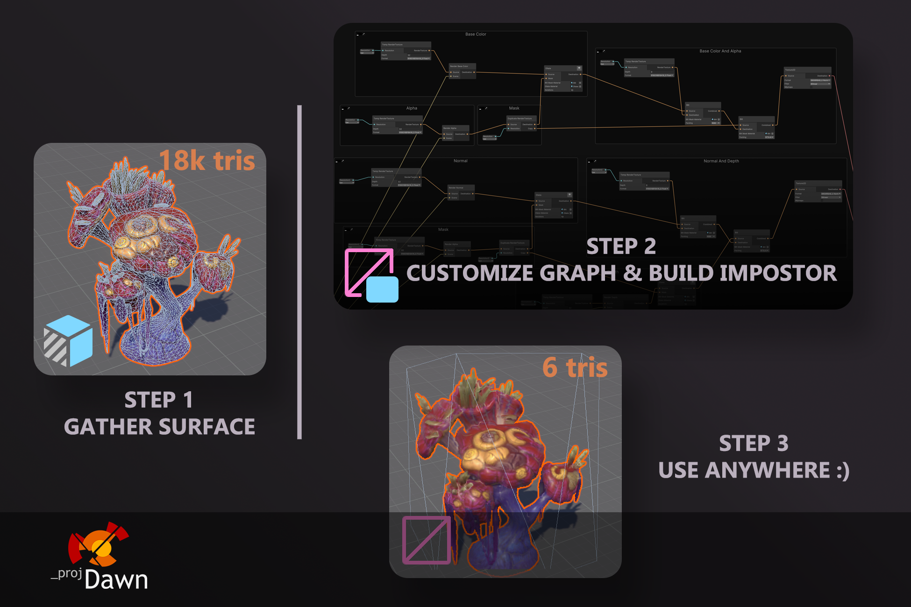

Impostor Graph
The Impostor Graph is a tool that allows users to create custom impostors for real-time rendering of distant objects. It enables users to build a graph of nodes that output texture atlases, materials, meshes, or other custom data, providing complete control over the impostor building process.
About
Octahedral impostors are a popular technique used in real-time computer graphics to render complex 3D objects quickly and efficiently. This technique involves capturing a snapshot of the object from a specific viewpoint and projecting it onto the six faces of an octahedron to create a simplified version of the object. By doing so, the simplified version can be loaded quickly at runtime and used to create flat 2D images of the object. Octahedral impostors are particularly useful for rendering large and complex environments, and can be combined with other rendering techniques, such as LOD systems, to improve performance further.